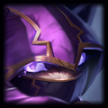
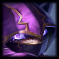
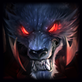
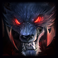

Who made this thing, and why?
Hey! We're KirkBerkley and RndmInternetMan, two League of Legends players on the NA server. We created Urf Tunes for the
Riot Games API Challenge 2016. If you've seen
the winning entries from the previous API Challenges, you might remember us as the creators of
Summonurf's Rift
from the April 2015 Riot Games API Challenge.
Cool! So what is Urf Tunes?
Urf Tunes is a procedural music generator that uses your League of Legends Champion Mastery levels to generate a song unique to your data.
How does that data affect the music?
There's a few ways we use the Champion Mastery data to alter the song. First, we use the Mastery levels from different groups of champions as the seeds for the pseudorandom
number generators we use for things like determining the form of the song, the chord progressions, the pitches of the notes, the drum patterns, and so forth. By seeding the
pseudorandom number generator with consistent data, the same "random" numbers are produced for the same Champion Mastery data, which means you get the same song every time
(unless you level up a champion). Second, we look at the total levels of some groups of champions to determine which introduction your song gets. Third, the sound of the primary
melody instruments is created by directly using Champion Mastery levels; we'll get into this a bit more in a later question, as it's really fundamental to the project.
If you're interested in knowing what parts of the song are affected by a particular champion, you can search for the champion's name in our
code; we intentionally use champion names to index into the champion mastery data to make it easier to do this.
Hold on a second. You're saying that most of this project is just seeding a pseudorandom number generator, getting some numbers out of it, and there's your song? Isn't that kind of trivial?
Not quite. We're not just playing random notes in a random order and hoping for the best. We use the numbers to move through
Markov chains to choose the structure of the song, rhythms for the drums, pitches and durations of the melody notes, etc.
In short, Markov chains are a sort of "map;" for every possible state you could be in, it defines which states you can go to next, and what the probability of moving to each of those
states is. The values the pseudorandom number generator gives us define how we move through the "map." Setting up the Markov chains to produce something that sounds good can be tricky, and
is certainly more difficult than just using random numbers directly.
What's cool about using these Markov chains, and about using differently seeded pseudorandom number generators for each, is that leveling up a single champion results in only one part of the song
changing. This gives a similar, but still noticeably different, song, which gives a nice sense of progression as you level up champions. Another advantage of using this system is that
everyone, no matter how much or how little they've played League, has an interesting song.
Alright, that makes sense. So what about the "sound of the primary melody instruments" thing you mentioned earlier. Tell me more about that.
Like we said before, this is really fundamental to the project. So far, we've talked about how we use the Champion Mastery levels in ways that aren't really reversible: you can't tell
what Champion Mastery level you have on a particular champion just by listening to the song. The way we generated the sound of the primary melody instruments is reversible (to a certain
extent) which is what's really cool about it.
Without going into too much detail, combining
harmonics (integer multiples) of the frequency of the note you want to play at different powers
can be used to create complex sounds. This happens in real-life instruments, and it's why, say, a trumpet sounds different than a piano. With a computer, we can set which harmonics we want
to use, and how powerful we want those harmonics to be, allowing us to create a variety of sounds. For each of the five melody instruments used in the song (outside of the introduction), we use
your Champion Mastery levels on 26 champions; each champion affects one of the first 26 harmonics, and the higher the Champion Mastery level, the more powerful the harmonic will be in the sound.
Obviously, determining the Champion Mastery levels from those sounds isn't something a typical human could do (and we doubt even an atypical human could do it). So how is it reversible? Enter
the
Fast Fourier transform. Basically, the Fast Fourier transform takes the sound wave and extracts the powers of the harmonics
from the sound. We take this data and display it in the visualizer. You might notice that some patterns in the visualizer correspond to particular instruments. For example, the bass and bass drum
are pretty skewed towards the left side, and the snare drum is at equal height across the entire visualizer (this is because it's basically just white noise). The spikes you see are your Champion
Mastery levels. We also show the Champion Mastery levels using the champion icons below the visualizer so you can easily identify which champions are used in the current instrument and we dim the
images for lower Champion Mastery levels to make it easier to pick up on which champions correspond to which visualizer spikes.
Why'd you only use 26 champions per instrument? Why not use all 130 on the same one?
Actually, we tried that. You might notice that when the notes get lower, the spikes bunch up to the left of the visualizer, and when the notes get higher, they spread out a lot. In order to show all
of the data at once with the single instrument, we'd be restricted to extremely low notes, which wouldn't sound good at all.
Cool, I think I understand the basics of how Urf Tunes works now. Maybe you could tell me about how you came up with the idea?
Sure! There were a two main factors that went into the idea.
When the API Challenge was announced, something we thought about was the number of different possible sets of Champion Mastery levels there are. Each champion can have six different levels
and there's 130 champions, which gives 6130 possibilities, which is a bit more than 144431000000000000000000000000000000000000000000000000000000000000000000000000000000000000000000000000.
That's a lot. And since there's so many, it's extremely unlikely that any two League of Legends players have the same Champion Mastery data (outside of players with only a few total levels).
This makes your Champion Mastery levels a sort of "fingerprint," something that's unique to you. We thought it would be interesting to present that "fingerprint" in a unique way.
The other factor that went into the idea for Urf Tunes is one of our friends who studied music in university. He's not a programmer, but we had previously thought about what he would do if he
were to participate in the API Challenge. Something related to music would be the obvious choice. We took that idea, combined it with our thoughts about the Champion Mastery "fingerprint,"
and here we are!
What are you most proud of with this project?
When we made Summonurf's Rift last year, we went into it with a clear idea of what we were aiming for, we knew what tools and libraries we wanted to use, and we had some idea of what we were doing.
For Urf Tunes, we had none of that. Before this project, we knew nothing about procedural music generation and little about how sound worked, we didn't know what tools and libraries were available,
and we only had a vague idea of what the end result would look like. We didn't even know if we'd be able to figure out how to do what we wanted. So we're proud of the fact that we chose to go with
this project inspite of the uncertainty, that we learned a lot in only a couple of weeks, and that we managed to make some music that doesn't sound completely awful!
Speaking of tools and libraries, which ones did you use in this project?
The most important tool we used was the
Web Audio API. This is how we make all of sound that you hear and how the
visualization you see. It's also built-in to your browser; nothing to download or set up, just learn how it works and go!
For the recording, we used
WebAudioRecorder.js by GitHub user higuma.
For creating the website, we also used
jQuery and
Bootstrap.
Though not a development tool or library, we found
this website really helpful. It lets you look through chord progressions in popular songs
and see how frequently they're used, data which translated really well into rules for our Markov chains.
You've mentioned Summonurf's Rift a couple of times now. What did you learn from that project that helped with this one?
There are two main things we learned from Summonurf's Rift.
First, doing something unique for every champion isn't necessarily the best use of time. In Summonurf's Rift, it took RndmInternetMan
the better part of the first week just to make the images needed for the game. This time around, we decided that wasn't going to be a great approach, so we found different ways to use each
champion's data, rather than create a special sound for each champion. This saved us a bunch of time and forced us to think outside the box for how we could use each champion's data in an
interesting way.
Second, when we made Summonurf's Rift, we were really focused on just making the best end result. This resulted in each of us working only on the parts of the project that we already knew how
to do, so we didn't learn as much as we could have. For Urf Tunes, we still tried to make a great end result, but we also put a priority on our own learning, even if it meant taking a bit
more time to finish a part of the project. Two weeks is actually quite a bit of time for the API Challenge, there's no need to perfectly optimize your time, so feel free to take some time
to really learn what you're doing.
Is there anything you wish you could have done, but didn't have time to do?
There's a lot that could be done to add more variation to the generated music. For example, all of our songs have the same kind of "feel" to them, they're all in the same key, and they all
have the same time signature (4/4). We decided to keep these things the same across all of the songs to simplify our music generation algorithms, but they're restrictions we wish
we had time to remove.
We also had some ideas for features we wish we could've added to the site, for example, adding a playlist feature so you could enter a number of Summoner names and have their songs play one
after another or make it so you don't need to wait for the whole song to play before you can download the song.
Just a couple more questions. First, do you have any favourite songs you'd like to share?
Last question! I can't hear any sound/the sound is awful/the "Download Song" button doesn't work! Help?
Urf Tunes works best in Google Chrome. Although we've tried to make things work, we couldn't get everything working in every browser. In particular, the sound quality in FireFox is, in our
experience, much worse than in Chrome.
The "Download Song" button only becomes enabled after the song has finished playing, so if the song isn't done yet, you can't download the song.


 



 
